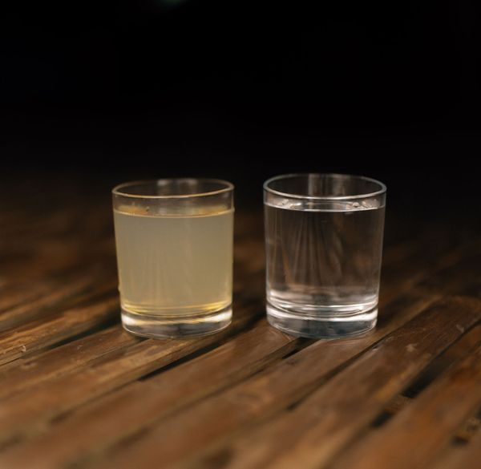

A Difference You Can See.
Ending the water crisis is our first goal. Our second goal is being fully transparent doing it. We follow The 100% Model, meaning we promise that 100% of your donation goes directly to fund sustainable clean water projects.
We also provide the proof. You can track the progress of the project your donation helps fund. As projects complete, you'll learn where your donations went and who you've helped.
Track your donations HERE
